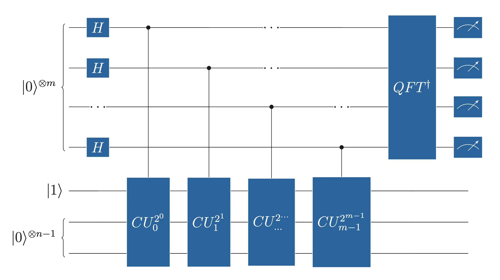
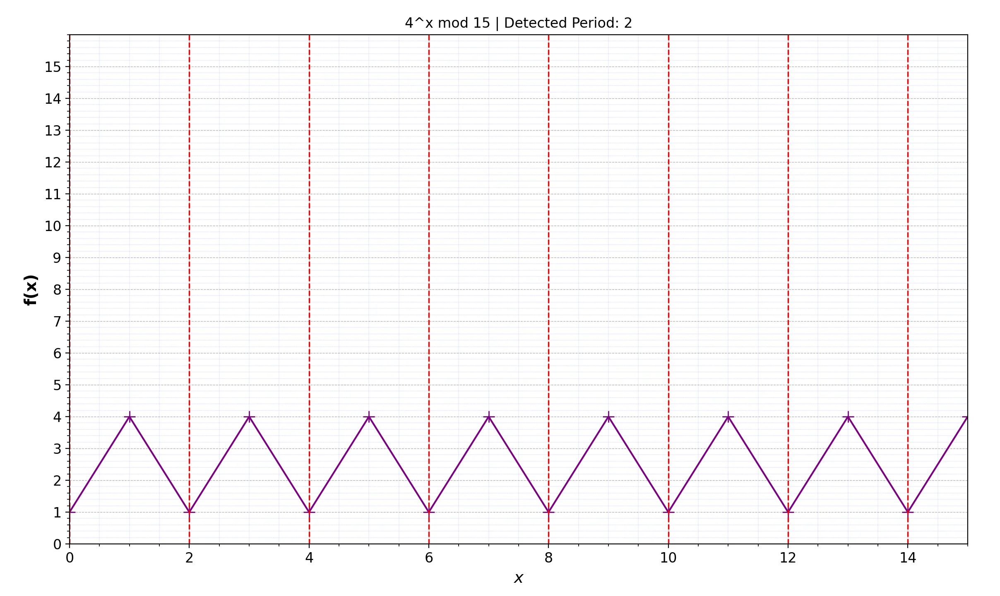
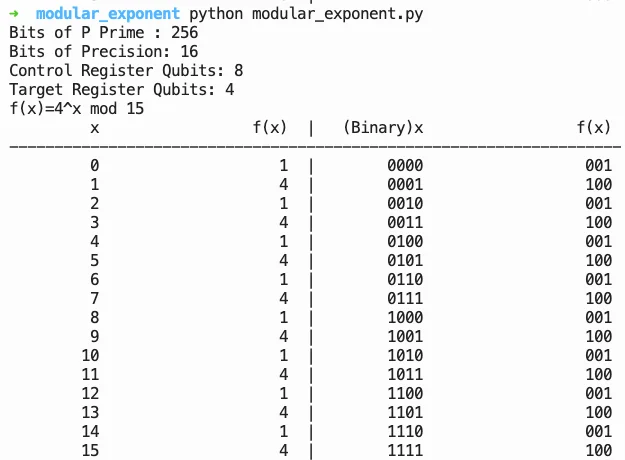
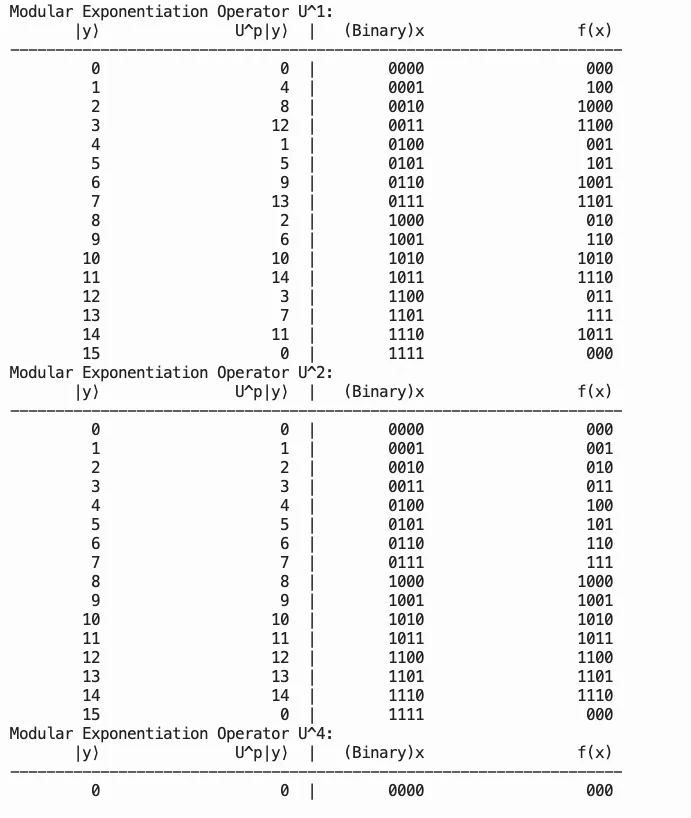
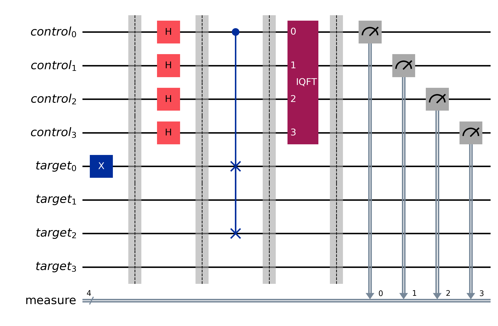
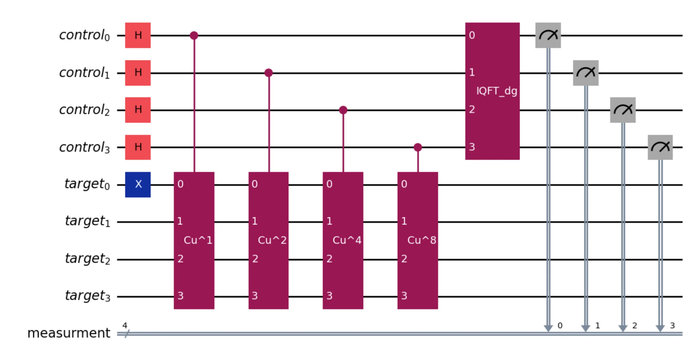
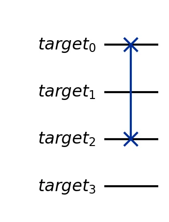
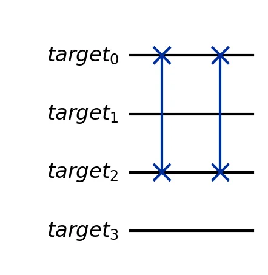
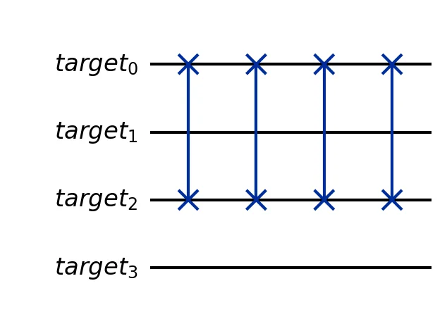
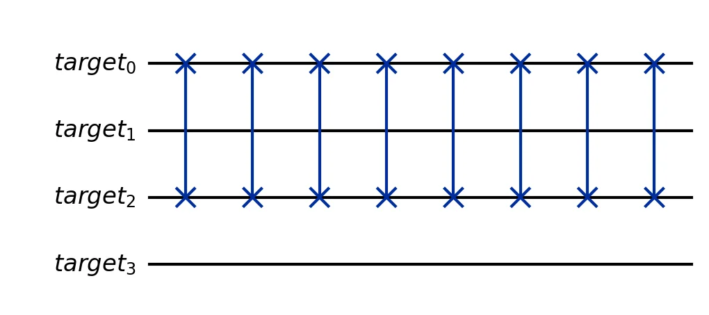

Exploring Shor’s algorithm through Qiskit. This post visualizes the algorithm’s circuit and its measurements, demonstrating how quantum states can be used to factor large integers.
Published
October 10, 2023
General Analysis of Shor’s Algorithm
Shor’s algorithm provides a methodology to factor a prime integer in polynomial time. Factoring in classical computers is a Non-Polynomial Problem but has not yet been classified as NP-complete. Shor’s algorithm consists of classical and quantum computation steps composed of number theory and quantum phase estimation techniques. Its best-known application is breaking the RSA Cryptosystem, but with a qubit number barrier. As it has been proved, the algorithm needs at least twice the number of qubits required to encode the random big integer prime of the system. This means that for an RSA2048-produced integer prime with 2048 bits, the algorithm needs at least 4096 qubits.
The lower computational cost of breaking the RSA system is to find the period of a modular exponent function and apply it to \(gcd\) functions to construct the two factors of the prime integer. These two factors lead to retrieving the private key.
RSA Components in a nutshell
\(p, q\): Two large prime numbers.
\(N = p \times q\): The modulus used in both the public and private keys.
\(d\): Private exponent, random integer prime to \((p - 1) \times (q - 1)\)
\(e\): Public exponent given by: \[d \times e \equiv 1 \ (\text{mod} \ (p - 1) \times (q - 1))\]
Public key: \((e, N)\)
Private key: \((d, N)\)
Encryption: Given message \(M\), \(C = M^e \mod N\)
Decryption: Given ciphertext \(C\), \(M = C^d \mod N\)
Shor’s Algorithm has only one quantum computational part, which is to find the period using the Quantum Phase Estimation by applying the modular exponent function as an Oracle.
Modular exponent function
\(f(x) = a^x \mod N\), with a random chosen number where \(2 < a < N\) and \(\gcd(a, N) = 1\)
\(x \in \mathbb{N}_0 = \{0, 1, 2, 3, \dots\}\)
Period finding
For each \(x\) (in decimal), the function \(f\) is being evaluated until \(f(x)=1\), then the non-zero iteration \(x\), is the period. The period of \(f\), denoted with \(r\), and it is the first non-zero integer that: \[f(r) = a^r \mod N = 1 \tag{1}\]
Quantum Phase Estimation (QPE)
QPE (Figure 1) extends the Phase-kickback phenomenon and provides an algorithm to calculate a Unitary Operator in high accuracy. It consists of two registers, usually with different names, but we’ll keep control and target for simplicity. If the Control Register has \(m\)-qubits and the target register has \(n\)-qubits, the Unitary Operator (U) is a controlled-Unitary operator (CU) controlled by control qubits and acting on all target register qubits. The appliance needs a convention on how the quantum register represents the bits. Qiskit ecosystem has an inverted convention, which we will use here for simplicity. Thus, the most significant bit (MSB) is represented by the least significant register number e.g. for a 5-bit number, \(x_4\) is represented by qubit \(q_0\), and \(x_0\) by qubit \(q_4\).

Figure 1: QPE Circuit
If \(x_{[10]}\) is a x in decimal state and \(x_{[2]}\) the binary, represented by control register with m-bits, then:
This is the phase kickback since the global phase of the target qubit, controlled by the U operator, is transferred back to the relative phase of the control qubit.
Generalizing the equation to m-bits summation, the control register’s state after CU applications will be:
\[|\psi_2\rangle=\frac{1}{\sqrt{2^m}}\sum_{k \in \{0,2^m-1\}} e^{2\pi i \theta k} |k\rangle\]
Applying the inversed QFT \((QFT^\dagger)\), will convert the phase into control register’s state, and we can measure it: \[|\psi_3\rangle=QFT^\dagger|\psi_2\rangle= |2^m \theta\rangle \tag{2}\]
Simulate Shor’s Algorithm in Qiskit
Shor circuit uses the QPE circuit (Figure 1) for period finding upon control register measurement. After the measurement, post-processing is performed to factor the given prime integer using the founded period. To describe the algorithm, we will use \(N=15\), as the prime integer we need to factor. The most critical part is to create the Oracle Circuit, which I found confusing when I tried to apply the QPE-separated CU oracles. I made a tool to perform a few calculations before oracle design, in order to select the number \(a\) for the modular exponent function. Since this number dictates the period, it has direct impact on circuit complexity. I found it easier to work with \(a=4\) due to function outputs, which made it easier to construct the circuit. This tool is nothing special, and many qiskit examples having similar tools.
N, a =15, 4print(f"f(x) = {a}^x mod {N}\n")print(f"{'x':>4} | {'f(x)':>6}")print("-"*14)for x inrange(2* N): fx =pow(a, x, N)print(f"{x:>4} | {fx:>6}")if x >0and fx ==1:print(f"\nPeriod r = {x}")break
f(x) = 4^x mod 15
x | f(x)
--------------
0 | 1
1 | 4
2 | 1
Period r = 2

Figure 2: Modular exponent table

Figure 3: Period detection
Along with the period, we calculate the needed qubits for Control register (\(m\)) and for target (\(n\)) with: \[n=\log_2 N, \quad m = 2n\]
To construct the multiple Controlled Oracles, we need to construct the first instance with \(j=0\), and detect the output. In Shor’s Algorithm, the U operator is:
\[U_{a,N}|y\rangle=|a y \mod N \rangle\]
In our case, \(N=15\) and we chose \(a=4\): \[U_{4,15}|y\rangle=|4 y \mod 15 \rangle\]
We will choose fewer qubits for this example. We have \(m=n=4\), U is unitary, and QPE starts the target register in \(|1\rangle\), therefore: \[U_{4,15}^{2^0}|y\rangle=U_{4,15}|y\rangle=|4 y \mod 15 \rangle\]\[U_{4,15}^{2^1}|y\rangle=U_{4,15}^{2}|y\rangle=|4^2 y \mod 15 \rangle\]\[U_{4,15}^{2^2}|y\rangle=U_{4,15}^{4}|y\rangle=|4^4 y \mod 15 \rangle\]\[U_{4,15}^{2^3}|y\rangle=U_{4,15}^{8}|y\rangle=|4^8 y \mod 15 \rangle\]
As shown in the period table above, the first non-zero \(x\) with \(f=1\) is 2, therefore \(r=2\). \[f(1)=4 \qquad f(2)=1\]
Applying the Oracles, we can observe the state changes needed to construct the circuit: \[U_{4,15}|1\rangle=|4\rangle\]\[U_{4,15}^{2}|1\rangle=U_{4,15}(U_{4,15}|1\rangle)=U_{4,15}|4\rangle=|1\rangle\]\[U_{4,15}^{4}|1\rangle=U_{4,15}^{2}(U_{4,15}^{2}|1\rangle)=U_{4,15}^{2}|1\rangle=|1\rangle\]\[U_{4,15}^{8}|1\rangle=U_{4,15}^{4}(U_{4,15}^{4}|1\rangle)=|1\rangle\]
Only the first Oracle application is transforming the following states:
The other Oracle appliances do not change state. Hence, the decision of \(a=4\), consulting the oracle overview below:

Figure 4: Oracle overview
The circuit was simulated with Qiskit and executed using the ideal simulator. The circuit diagram (Figure 5) shows the full Shor circuit, and the four Oracle appliances are shown in Figure 6. The SWAP of target_0 and target_2 qubits of the target register covers the state transitions, and for all other applications, the multiplied execution of SWAP reverts the state to the beginning.
Since \(U = \text{SWAP}(\text{target}_0, \text{target}_2)\) and \(U^2 = I\) (SWAP is self-inverse), only \(CU^1\) requires a gate — a single CSWAP controlled by the first control qubit. The circuit is built below:
import mathfrom qiskit import QuantumCircuit, QuantumRegister, ClassicalRegisterfrom qiskit.circuit.library import QFTN =15a =4n =int(math.ceil(math.log2(N))) # 4 target qubitsm = n # 4 control qubits (m=n as in the article)qr_ctrl = QuantumRegister(m, 'control')qr_tgt = QuantumRegister(n, 'target')cr = ClassicalRegister(m, 'measure')qc = QuantumCircuit(qr_ctrl, qr_tgt, cr)# Initialise target in |1⟩qc.x(qr_tgt[0])qc.barrier()# Superposition of control registerqc.h(qr_ctrl)qc.barrier()# Controlled-U^{2^j} oracles# U_{4,15}: |1⟩ ↔ |4⟩ → SWAP(target[0], target[2])# U^2 = U^4 = U^8 = I (SWAP² = I, no additional gates needed)qc.cswap(qr_ctrl[0], qr_tgt[0], qr_tgt[2])qc.barrier()# Inverse QFT on control registeriqft = QFT(m, inverse=True)qc.append(iqft, qr_ctrl)qc.barrier()# Measure control registerqc.measure(qr_ctrl, cr)qc.draw(output='mpl', style='iqp')
/var/folders/31/svbv3mgs43z95fd6bh8wqkkr0000gn/T/ipykernel_98215/2073691342.py:30: DeprecationWarning: The class ``qiskit.circuit.library.basis_change.qft.QFT`` is deprecated as of Qiskit 2.1. It will be removed in Qiskit 3.0. ('Use qiskit.circuit.library.QFTGate or qiskit.synthesis.qft.synth_qft_full instead, for access to all previous arguments.',)
iqft = QFT(m, inverse=True)


Figure 5: Shor Circuit in Qiskit

Figure 6: Oracle \(CU^1\)

Oracle \(CU^2\)

Oracle \(CU^4\)

Oracle \(CU^8\)
The probability for \(|0000\rangle\) and \(|1000\rangle\) states is approximately equal, encoding the two phase values \(\phi = 0\) and \(\phi = 1/2\):
The code was executed on ibm_brisbane due to immediate availability, but the results were wrong (Figure 8, left). FakeSherbrooke was more reliable during experiments (Figure 8, right), and I executed my circuit on a ibm_sherbrooke backend, but with noticeable noise. During all Assignments, I’ve noticed that Brisbane is not responding reliably in more complex circuits, while Sherbrooke provides less noisy results. Exporting Operations metrics (Figure 9), I can observe that Brisbane has fewer operations after transpilation, which may explain the more noisy results.
Helper — job_metrics()
def job_metrics(job, backend):"""Print job ID, counts histogram, and distribution for a completed job.""" experiment = backend.name pub_result = job.result()print(f"Job ID: {job.job_id()}")if experiment =="aer_simulator_statevector": counts = pub_result.get_counts() plot_histogram(counts) plt.show()for key, value in pub_result.data(0).items():ifisinstance(value, Statevector): statevector = valueprint(f"\nStatevector — {key}:")for state, prob in statevector.probabilities_dict().items():print(f" |{state}⟩: {prob:.4f}") plot_bloch_multivector(statevector) plt.show() plot_state_qsphere(statevector, show_state_phases=True) plt.show()else: data_bin = pub_result[0].datafor key in data_bin.keys(): counts = data_bin[key].get_counts() plot_histogram(counts, title=key) plt.show() plot_distribution(counts, title=key) plt.show()
# Simulate on FakeSherbrooke (noise model derived from real hardware)backend = AerSimulator.from_backend(FakeSherbrooke())aer_mimic_simulation(circuit=qc, backend=backend, shots=4096, metrics=True, run=True)
Post-processing of the Shor’s Circuit results (Figure 7), for \(a=4\) and \(N=15\), is the final step of Shor’s Algorithm. From the ideal simulator, the measurement results were the states \(|0000\rangle\) and \(|1000\rangle\), with almost equal probability.
From equation (2), we know that the final state of the circuit will be: \[|2^m \phi\rangle\]
Since we have 2 peaks, we can denote the final measurement as \(l\), with:
Therefore, we have two results: \[r_0=0, \quad r_1=2\]
Checking equation (1), to find the period. The first solution of \(r_0\) is not acceptable; thus we’ll evaluate only \(r_1\): \[f(r_1) = a^{r_1} \mod N = 4^2 \mod 15 = 1\]